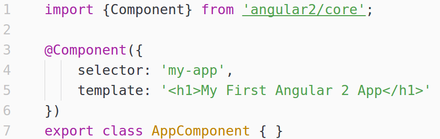
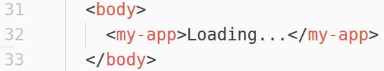
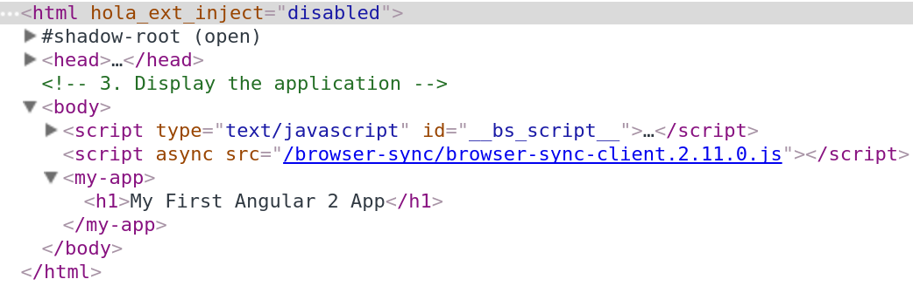
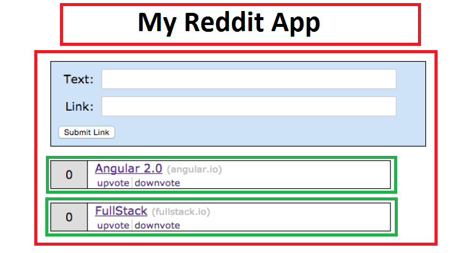

Creación de una aplicación tipo reddit en Angular 2.0.
Angular 2.0
- El equipo de AngularJS tomo la decisión de cambiar drásticamente a AngularJS.
- Google y en general los developers de Angular querían un mejor framework:
- Curva de aprendizaje menor
- Mejorar el Desempeño
- Anunciado ng-conf el 13 de Marzo de 2015
- Hoy se encuentra en versión Beta
Características
- MOBILE FIRST
- FUTURE READY ECMAScript 6 (ES6) Y TYPESCRIPT
- FLEXIBLE DEVELOPMENT
- SPEED & PERFORMANCE
- SIMPLE & EXPRESSIVE
- COMPREHENSIVE ROUTING
- ANIMATIONS
- HIERARCHICAL DEPENDENCY INJECTION
- SUPPORT FOR WEB COMPONENTS
- INTERNATIONALIZATION (I18N) & ACCESSIBILITY
Web Component
Los Web Components son un conjunto de estándares que nos permiten crear y utilizar elementos HTML personalizados (etiquetas)
Web Component en Angular 2

Web Component en Angular 2

DOM de un web Component

¿Cuántos Web Components hay?
3 Si queremos un título

Manos a la Obra
Repositorio: https://github.com/seagomezar/redditappstepbystep
Paso 0
- 1. Creamos el archivo package JSON
- 2. Ajustamos el título.
Paso 1
- Creamos el archivo tsconfig.json
Paso 2
- Creamos una carpeta app
- Creamos un archivo llamado app.component.ts
- Creamos nuestro primer Component
Paso 3
- Creamos el archivo boot.ts donde importamos el componente que hemos creado
- Creamos el archivo index.html donde incluímos las librerías e inicializamos la aplicación
- npm start
Paso 4
- Incluímos los estilos preparados
Paso 5
- Creamos nuestro Form Component incluyendo la vista del Web Component
- Incluimos en nuestro archivo index.html la etiqueta que hemos hecho.
Paso 6
- Añadimos una función a nuestro botón y añadimos modelos a los inputs.
Paso 7
- Creamos el component Article y lo incluímos en boot.ts.
Paso 8
- Añadimos return false para que no reinicie la página cada vez que votamos.
- Colocamos adentro de nuestro Form Component el Reddit Article Component
- Removemos del Boot.ts la el Article Component, y la etiqueta del index.html
- Incluimos el Article Component Dentro del FormComponent como directiva
Paso 9
- Creamos una clase llamada Article la cual permite crear objetos de tipo Artículo
- Cambiamos el constructor para que cree un objeto de tipo Artículo
Paso 10
- Pasamos la funciones de votos a la clase y accedemos a ellas desde la vista con el operador (.)
Paso 11
- Pasamos nuestra clase Artículo a un archivo aparte llamado article.class, las clases deben ser almacenadas en archivos class.ts
- Cambiamos el construtor del Form Component para que por defecto cree dos Artículos
- Colocamos los articulos en un Array de artículos
Paso 12
- En el Article Component decimos que la vista va a tener un input llamado Article
- En el Form Component hacemos un ngFor para cada uno de los Artículos
Paso 13
- Removemos el código del Article Component porque no es necesario nada dentro de él
- Añadimos el target blank y Arreglamos el link del artículo
- Creamos una función que nos permite mostrar los artículos por el orden de los votos.